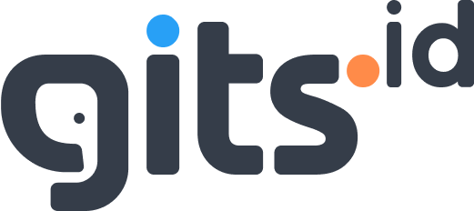
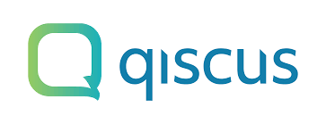

Leadership
Cross-functional coordination
Keeping delivery aligned across stakeholders, timelines, teams, and shifting priorities.
PORTFOLIO / PERSONAL BRAND
Project Management · Product Strategy · Digital Execution
Hello, I’m Medy Febriyansyah
I help teams translate business goals into structured delivery, better stakeholder alignment, and stronger product outcomes.
Saya berfokus pada eksekusi proyek digital, koordinasi lintas tim, dan product thinking yang membuat delivery lebih rapi, terarah, dan bernilai.

Professional Snapshot
Value proposition
A profile built for recruiters, collaborators, and teams who need someone that can drive momentum from planning to delivery.
Graduated in Information Systems with hands-on experience across project management, product management, UI/UX collaboration, and data-driven analysis.
I bring structure to moving parts: from aligning stakeholders and managing timelines to helping teams make better product decisions based on user needs and business direction.
Saya nyaman bekerja di persimpangan antara strategi, komunikasi, dan eksekusi. Fokus saya adalah memastikan tim bergerak dengan jelas, prioritas tetap terarah, dan hasil kerja benar-benar terasa nilainya.
Project & product roles
Initiatives across apps, AI, and enterprise systems
GPA in Information Systems
TOEFL score with bilingual communication readiness
Leadership
Keeping delivery aligned across stakeholders, timelines, teams, and shifting priorities.
Product mindset
Connecting business goals, user context, and practical delivery plans into actionable next steps.
Execution
Comfortable operating through Scrum, structured task tracking, and iterative collaboration with teams.
Experience impact
Each role strengthened a blend of project leadership, product thinking, and execution under real business constraints.

PT Gits Indonesia
November 2025 – May 2026
Managing and supporting multiple digital initiatives with strong emphasis on stakeholder alignment, structured execution, and delivery ownership.

PT Qiscus Tekno Indonesia
July 2025 – December 2025
Led execution across multiple AI-focused client initiatives with Agile coordination and active stakeholder communication.
PT Wesclic Indonesia Neotech
October 2024 – March 2025
Led app development coordination while contributing to design direction and delivery structure.
PT Rakamin Academy
April 2025 – May 2025
Built stronger product foundation in problem framing, stakeholder handling, and release-oriented thinking.
VINIX & TAM Group
2022 – 2023
Early career experience shaped business sensitivity, market understanding, and customer-oriented thinking.
Selected work
A curated view of initiatives across enterprise systems, AI products, mobile apps, and UX-driven work.
Role: Project Manager
Supported structured delivery for a warehouse management platform with emphasis on operational clarity, coordination, and execution flow.
Role: Project Manager Lead
Managed delivery across multiple AI-based brand initiatives for Instaperfect, OMG, Paragon, and Makeover with Agile coordination.
Role: Project Manager
Led app delivery across transportation, health center, and lifestyle contexts while keeping team execution aligned.
Role: Scrum Master & Lead Business
Built a waste tracking product concept supported by Scrum process and market analysis through TAM, SAM, and SOM framing.
Role: Scrum Master
Facilitated a three-sprint digital product cycle with product discovery and design thinking foundations.
Role: UI/UX Designer
Delivered redesign exploration using design thinking, wireframes, and high-fidelity prototypes to improve user experience direction.
Core strengths
Tools and skills that support planning, delivery, stakeholder handling, and better decision making.
Credentials
A mix of formal education and practical upskilling in management, product, data, and digital technology.
Alma Ata University, Yogyakarta
August 2021 – September 2025
GPA 3.81/4.00 · TOEFL 633
ESAS Management, Jakarta
April 2025
Score 89.8/100 · 32-hour intensive training
Contact
Open to professional opportunities, collaboration, and conversations around project delivery, product direction, and digital execution.
Bantul, Yogyakarta, Indonesia